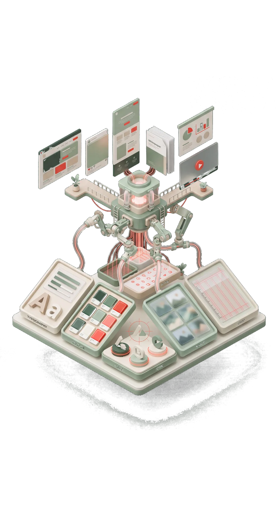
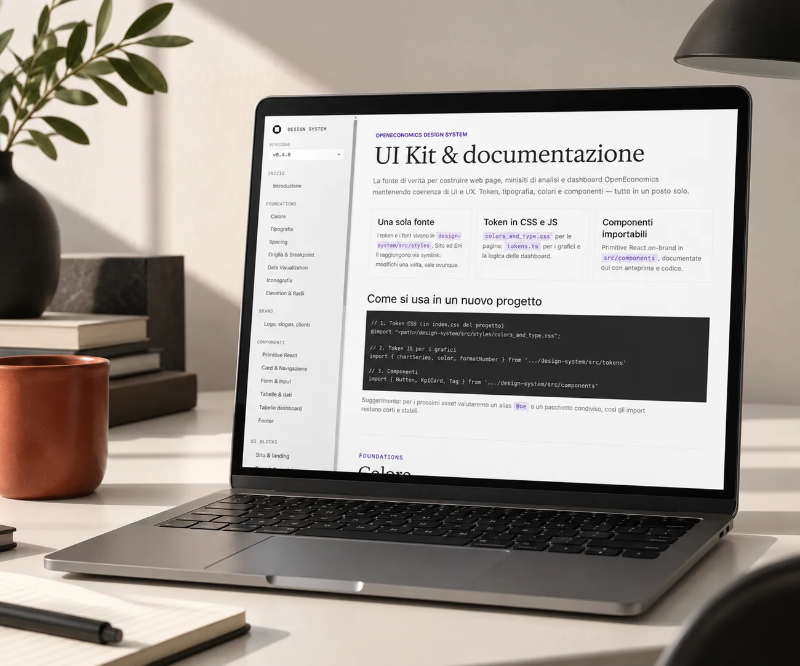

Le decisioni di base
Foundations
- Colori e scale tonali
- Tipografia e gerarchie
- Spaziature e griglie
- Icone e grafici

Prendo l'identità che hai già e la trasformo nel contesto che il tuo team e l'AI usano per produrre. Le regole smettono di stare in un documento e finiscono dentro i file da cui nascono i lavori.
Il problema
Ogni presentazione nasce dal file di un'altra presentazione, che a sua volta era stata adattata da un'altra ancora.
Il sito, le slide commerciali e il profilo LinkedIn sembrano appartenere a tre aziende diverse.
Per cambiare un colore in un template devi aspettare la persona che quel template l'ha creato.
Qualcuno in azienda ha iniziato a generare immagini e testi con l'AI. E si vede.
Il brand book esiste. L'ultima volta che qualcuno l'ha aperto era il giorno della consegna.
Le richieste di grafica si accumulano, e intanto il marketing rallenta per aspettare i materiali.
Il gusto non c'entra. La regola esiste, ma non sta dove si lavora: sta in un documento, mentre il lavoro succede altrove.
Perché succede
Il brand book elenca i colori giusti e mostra gli usi sbagliati del logo. Poi qualcuno apre una presentazione alle sei e mezza di sera, prende il blu da uno screenshot perché è più veloce che cercare il codice esatto, e va avanti.
Il documento non era sbagliato. Semplicemente non era lì nel momento in cui serviva, e chiedere a qualcuno di ricordarsi sei regole mentre lavora di fretta non ha mai funzionato.
In un sistema i colori sono valori che i file leggono da soli. I componenti sono blocchi già montati, con dentro le spaziature corrette. Le pagine tipo esistono già, e chi le usa parte da lì.
E l'intelligenza artificiale riceve tutto questo scritto in una forma che può applicare davvero: non un PDF da interpretare, ma regole nominate, esempi giusti ed esempi scartati.
Cos'è
Ogni livello poggia su quello sotto. Cambi un valore in cima e si aggiorna tutto quello che lo usa, senza rifare niente a mano.
Foundations
Components
UI Blocks
Cosa ti ritrovi in mano
Alla consegna il lunedì mattina hai questo, dentro un tuo repository, in formati che qualsiasi sviluppatore o designer sa aprire.
Una libreria che si apre dal browser, dove ogni elemento ha l'anteprima dal vivo e il codice da copiare.
Colori, font e spaziature come valori che i file leggono, non come screenshot da cui prelevare a occhio.
Componenti e pagine già montate per sito, report e dashboard, pronte da riempire.
Il contesto scritto che l'intelligenza artificiale legge prima di produrre qualsiasi cosa.
Una rubrica per giudicare un risultato, scritta perché la sappia usare anche chi non è designer.
L'archivio degli esempi approvati e di quelli scartati, ognuno con il motivo della decisione.
La documentazione del comportamento: quando si usa un componente, come si compone, quali eccezioni evitare.
Esplora i case study
Un caso reale, dall'inizio alla fine: l'audit del materiale esistente, l'architettura del sistema, il controllo qualità e gli output finiti, ognuno apribile e verificabile.

Caso 01 · Analisi economica e advisory
Un patrimonio visivo sparso tra brand book, report, presentazioni e prodotti digitali, trasformato in una sola fonte di verità. Oggi da quel sistema nascono pagine di sito, dashboard, report e un video intero prodotto senza software di montaggio.
Leggi il case study ↗Vuoi vedere il sistema applicato al tuo settore? Contattami.
La differenza
Un modello che produce in fretta produce in fretta anche gli errori. Per questo non consegno solo le regole: definisco come si giudica un risultato prima che arrivi a un cliente. Il giudizio vive in file, non nella testa di chi era in stanza quel giorno.
Colori, spaziature e componenti non sono consigli: sono valori e vincoli. Quello che esce dal sistema si vede subito, e si corregge alla fonte invece che su ogni singolo file.
Gerarchia, leggibilità, equilibrio, trattamento del dato. Ogni risultato viene valutato su criteri con un nome, non su impressioni. Gli stessi criteri valgono per me, per il tuo team e per l'AI.
Gli esempi approvati e quelli buttati vengono conservati insieme al motivo. È così che il sistema impara a distinguere quello che è corretto da quello che è buono.
Come si lavora
Nessuna delle tre ti obbliga alla successiva. Se dopo l'audit decidi di non andare avanti, il documento che hai in mano resta utile lo stesso.
Due o tre settimane
Guardo tutto il materiale che hai già e ti dico cosa si può sistematizzare, cosa va rifatto e cosa conviene lasciare com'è.
Cosa serve da teL'accesso ai file e due ore di chi conosce il brand meglio di tutti.
Da sei a dieci settimane
Costruisco la fonte di verità e il contesto che permette all'intelligenza artificiale di lavorare dentro il tuo brand invece che accanto.
Cosa serve da teUna persona di riferimento e circa un'ora a settimana per le revisioni.
Canone mensile
Un sistema fermo invecchia. Ogni mese entrano formati nuovi, l'archivio delle scelte si aggiorna e la produzione del team resta sotto controllo.
Cosa serve da teLe richieste, quando arrivano. Nessuna riunione fissa.
Da sapere
I tempi dipendono da quanto materiale esiste già e si definiscono dopo l'audit. Il lavoro creativo su misura, campagne e progetti unici, resta fuori dal canone e si quota a parte: il sistema serve a liberarti tempo per quello, non a sostituirlo.
Onestà
Domande
Il brand book descrive, e continuerà a servire: diventa la fonte da cui parte il lavoro. Quello che non può fare è impedire l'errore mentre qualcuno lavora di fretta. Il sistema sì, perché la regola vive dentro i file che generano i materiali.
Non serve che lo sia. Chi produce contenuti apre una libreria e un back office: sceglie un blocco, scrive, pubblica. Il codice sta sotto e riguarda me e chi sviluppa.
Sì, quando lavora senza vincoli, ed è quello che succede oggi in metà delle aziende che la usano. Qui riceve regole con un nome, esempi corretti, esempi scartati e criteri di valutazione. La direzione la decidiamo noi, lei la applica.
Dipende da quanto materiale esiste e da quanti formati devono entrare nel sistema, quindi una cifra prima di aver visto i tuoi file sarebbe inventata. L'audit è la fase più contenuta e serve proprio a questo: alla fine hai un numero reale e sei libero di fermarti.
Due ore in fase di audit, circa un'ora a settimana durante il setup. Dopo, solo il tempo di mandarmi le richieste. Il lavoro pesante sta dalla mia parte.
Il sistema è tuo. Valori, componenti, documentazione e archivio restano nel tuo repository, in formati aperti che qualsiasi studio può riprendere in mano. Il canone si rinnova perché serve, non perché sei bloccato.
Chi sono
Sono Alessio Granella, brand e graphic designer. Prima di lavorare dall’esterno ho passato dieci anni dentro una software company: le presentazioni che non si somigliavano e i template che nessuno aggiornava li ho visti nascere da vicino, non me li hanno raccontati.
Oggi lavoro con uffici marketing e aziende che devono comunicare ogni settimana: OpenEconomics e Produttori Arborea.
Da quando l'intelligenza artificiale è entrata nella produzione ho smesso di consegnare soltanto file. Costruisco il sistema che permette di produrne altri senza di me, e insegno a quel sistema a riconoscere quando il risultato non va bene.
Al tuo fianco ad ogni passo.
Iniziamo
Mezz'ora, senza impegno. Guardiamo insieme cosa produci oggi e dove si perde tempo. Se il sistema non è la risposta giusta per te, te lo dico nella stessa call.
Ho ricevuto il messaggio. Ti rispondo entro un giorno lavorativo, dallo stesso indirizzo: info@alessiogranella.com.
Non è il momento di una call? Mandami il link del tuo sito e ti rispondo con due righe su cosa sistematizzerei per primo. Senza che debba prepararmi niente.
Mandami il link ↗